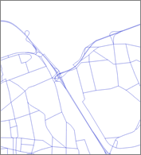
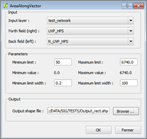
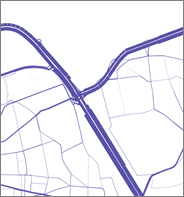

Area Along Vector
Cette extension permet de dessiner des rectangles le long de polylignes en fonction de valeurs de champs données. Elle a été développée pour représenter des volumes de trafic sur un réseau routier. Afin d’illustrer les valeurs pour les deux sens de circulation, des rectangles aux largeurs proportionnelles sont dessinés de part et d’autre des vecteurs du réseau.
  Ce que fait l’extension ?
Pour chaque segment des polylignes, deux rectangles sont créés : un pour le sens aller (sur la droite), l’autre pour le sens retour (sur la gauche). La largeur des rectangles est proportionnelle aux valeurs des champs choisis (par exemple VOL et R_VOL). Le résultat est affiché dans une nouvelle couche.
Mode d’emploi ?
Sélectionner une couche de vecteurs avec deux champs contenant les valeurs de chaque sens. Changer les paramètres pour ajuster le rendu. L’interface affiche les valeurs minimum et maximum des champs sélectionnés. Un seuil haut et bas permettent de définir les limites au-delà desquelles les largeurs appliquées sont constantes (les largeurs seuil sont utilisées).
Un nouveau fichier shape contenant les rectangles est créé.